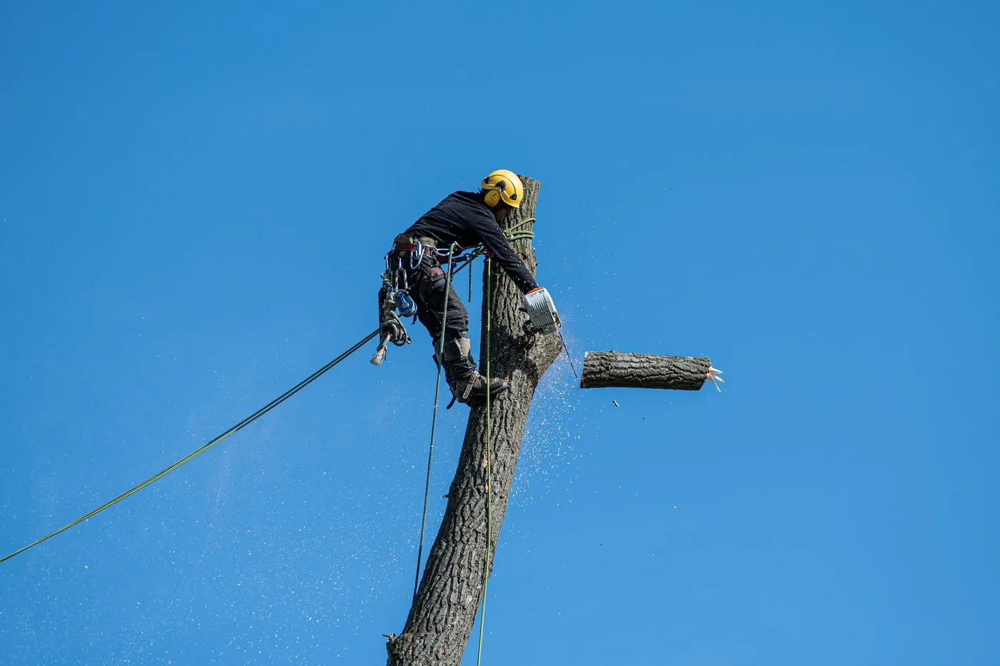
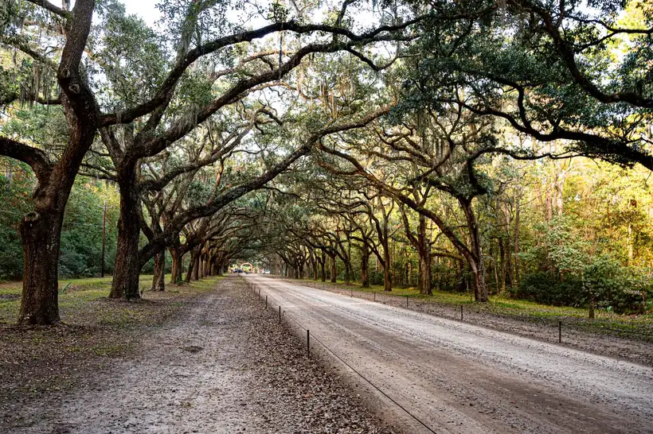

Removal, trimming, palm care and storm cleanup from a crew that works on a barrier island every day — salt-stressed live oaks, sand that will not hold a crane mat, and hurricane season on the calendar from June through November.

Tree service in Galveston covers the work of keeping trees on a sand bar alive, and taking them down safely when they are not. That means removal, canopy pruning, palm work, stump grinding, storm response and clearing overgrown lots. On the mainland these are routine jobs. Out here the ground, the wind and the salt change how each one has to be done.
Galveston sits on wind-blown sand. The USDA soil survey describes the Galveston series as fine sand with between zero and five percent clay, sitting over a seasonal water table that can be as shallow as eleven inches. Roots spread wide and shallow instead of going deep, because there is nothing down there to hold onto and salt water underneath if they try. A live oak that would be anchored in Houston clay is standing on a dinner plate here.
That single fact drives most of what we do. A tree that leans is a bigger deal on the island. A saturated yard after three days of rain is a bad time to run a bucket truck across a root plate. And a canopy that never gets thinned catches a southeast gulf wind like a sail.
The people who need this work are the ones who already know something is off — a limb over the bedroom, a palm nobody has touched in four years, a stump in the way of a new driveway, or an oak that has looked wrong since the last storm.

Five situations account for most of the calls we take on the island.
Chinese tallow. It seeds itself into every vacant lot and fence line on the island, grows faster than anything native, and snaps in wind because the wood is brittle. If you have a volunteer tree you did not plant and it grew six feet in two years, that is probably what it is, and it is worth taking out while it is still small.
Every job follows the same five steps, and we tell you where the price can move before we start rather than after.
Six services, each with its own page covering process, timing and real cost factors for Galveston.
Dead, leaning, storm-damaged or simply too close to the house. Sectional removal where a drop is not safe, and full haul-off either way.
See how tree removal works →Canopy thinning for wind, clearance over roofs and drives, deadwood removal, and oak work timed around the oak wilt window.
See how tree trimming works →Dead fronds, seed pods and boots removed without the hurricane cut that weakens palms. Lethal bronzing checks while we are up there.
See how palm trimming works →Ground six to twelve inches below grade so you can plant, pour or fence over it. Sand grinds fast, which keeps the price down.
See how stump grinding works →Trees on roofs, cars, fences and drives. Hurricane season calls get priority over scheduled work, day or night.
See how storm response works →Overgrown lots, fence lines and Chinese tallow thickets cleared down to workable ground ahead of a build or a sale.
See how lot clearing works →We plan for sand, not clay. Mainland crews bring equipment that sinks, then either tear up your yard or tell you the job costs more than they quoted. We look at ground conditions before we quote, and we bring mats when the water table is up.
We do not top trees and we do not hurricane-cut palms. Both are sold on this coast as storm preparation. Both make the tree more likely to fail, and the research says so plainly. We will explain what actually reduces wind load, and if you still want the cheap version, there are crews who will do it.
We know which trees are worth saving. A live oak that survived a full day underwater in 2008 has already proven something. Before quoting a removal on a mature oak we check whether the problem is the tree or the last person who pruned it.
Nobody likes a website that hides the number. Here is the honest range for the Galveston and greater Houston market. Your estimate lands inside it based on size, access and what is underneath the tree.
| Job | Typical range | What moves the price |
|---|---|---|
| Small tree removal, under 25 ft | $150 – $500 | Clear drop zone vs. rigging over a fence |
| Medium tree removal, 25–50 ft | $440 – $1,300 | Alley access, power drops, trunk diameter |
| Large tree removal, 50–75 ft | $900 – $2,500 | Sectional rigging, crane or no crane |
| Very large removal, 75 ft and up | $1,500 – $5,000+ | Nearly always a full-day crane job |
| Stump grinding | $150 – $400 | Diameter and how close to a slab or line |
| Canopy trim, mature oak | $350 – $900 | Climb vs. bucket, amount of deadwood |
| Palm trimming | $100 – $350 per palm | Height, species, years since last trim |
| Emergency storm call | 50–100% above standard | Night work, hazard, crane availability |
Two things push island prices toward the top of those ranges. Access is the first: the East End and Silk Stocking blocks were laid out for horses, and a rear alley that a chipper cannot enter turns a two-hour job into a day of hand-carrying brush to the street. The second is what is overhead. Galveston has a lot of older overhead service drops running through canopies, and rigging around a live line is slower work.
Call us if the tree is taller than the distance to your house, if any part of the work would put you within ten feet of a power line, if the trunk is leaning with soil lifting behind it, if you have an oak showing dieback, or if a palm has not been trimmed in more than two years.
You can probably skip us if you are cutting a sapling under about fifteen feet with nothing under it, trimming a crepe myrtle you can reach from the ground, or pulling volunteer tallow seedlings out of a bed. That is a Saturday, not a service call.
Wait, do not call yet, if it is February through June and you want an oak pruned for cosmetic reasons. Unless the limb is a hazard, that cut is better made in July. Read more about oak pruning timing in Galveston before you schedule it.
Most tree removal in Galveston runs $400 to $1,300 for a medium tree of 25 to 50 feet, and $900 to $2,500 for a large tree in the 50 to 75 foot range. Small trees under 25 feet usually land between $150 and $500. Island jobs often sit at the higher end of those ranges because narrow East End lots, overhead lines along the alleys and soft sand under the truck all slow the work down.
A tree on your own private property is generally your call. A tree in the public right-of-way, meaning the strip between the sidewalk and the curb, needs approval from the City of Galveston before anyone touches it. We tell you which one you have during the estimate, and we do not start a right-of-way removal until the paperwork is in hand.
Prune live oaks in Galveston between July and January. Texas A&M Forest Service asks people to avoid pruning oaks from February 1 through June 30, when the beetles that spread oak wilt are most active. Any oak cut we make gets wound paint within minutes, in any month, because a fresh oak wound is an open door.
Sometimes, and it depends on how long the roots sat in it. Hurricane Ike put salt water over most of the island for close to a day in September 2008 and killed roughly 40,000 trees, but oaks in areas that drained faster came through it. If the canopy is thinning from the top down and the bark is still tight, there is usually something to work with. Bark falling away in sheets means the tree is already gone.
Storm calls in Galveston get moved ahead of scheduled work. During hurricane season, June 1 through November 30, we keep a saw crew and a chipper loaded so we are not packing a truck while you wait. Trees on a roof, a car or a power drop get handled first, then driveways, then yard debris.
Stump grinding is priced separately because plenty of people want the stump left as-is. If you do want it gone, expect $150 to $400 for a typical residential stump. Galveston sand grinds fast compared with the clay on the mainland, which is one of the few things about island soil that works in your favor.
Tell us what the tree is doing and we will come look at it. Most estimates happen within a day or two, and storm calls move to the front of the line.
Call (409) 255-0582 for a Free Estimate